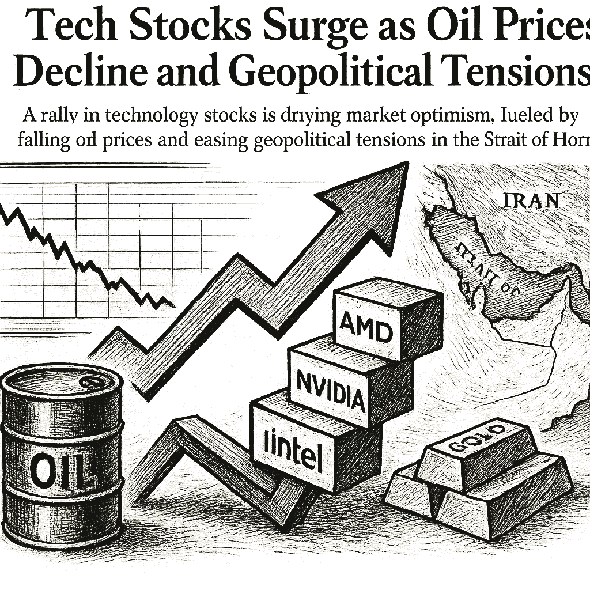

SPY
Current: $774.38Change: +16.99 (+2.24%)
Updated:
Source: yahoo_chartFreshness: fresh


A rally in technology stocks is driving market optimism, fueled by falling oil prices and easing geopolitical tensions in the Strait of Hormuz.

Today's Headline: Tech Stocks Surge as Oil Prices Decline and Geopolitical Tensions Ease
Setup: A rally in technology stocks is driving market optimism, fueled by falling oil prices and easing geopolitical tensions in the Strait of Hormuz.
Primary Topic: Market Performance
Specific Development: Technology stocks, particularly the QQQ, have surged significantly, while oil prices have dropped below $100, contributing to a positive market sentiment.
Why Today Is Different: Today's rally is marked by a notable decline in oil prices and a potential easing of military tensions in the Strait of Hormuz, which could stabilize energy markets.
Secondary Topics: Geopolitical Developments; Oil Prices; Technology Sector
Tone: Optimistic
Sectors: Technology; Energy
Companies: Nvidia; AMD; Intel
Commodities: Oil; Gold
Countries Or Regions: Iran; United States
Macro Themes: Market Stability; Geopolitical Risk
Why This Story: The interplay between declining oil prices and rising tech stocks is reshaping market dynamics, indicating a potential shift in investor sentiment.
Why This Matters: IonQ Just Raised 2026 Revenue Guidance. This Quantum Computing Pure-Play Looks Like a Brilliant Buy Now is the clearest current evidence-led frame for Joshua's observation-only review; missing facts remain explicit intelligence gaps.

Summary: Overnight, markets reacted positively to falling oil prices and easing geopolitical tensions, with tech stocks leading the rally.
What Happened Overnight: Tech stocks surged, while oil prices fell below $100, contributing to a positive market sentiment.
What Changed Materially: The decline in oil prices and potential easing of tensions in the Strait of Hormuz.
Which Assets Sectors Are Affected: Technology stocks are benefiting, while energy stocks are under pressure.
Does It Look Like Noise Or A Real Regime Input: This appears to be a real regime input, given the significant changes in oil prices and geopolitical context.
Why This Matters: Joshua can use verified cross-asset moves and deterministic risk context while keeping causation explicitly unresolved.

No high-priority earnings expectation block is supported by the current canonical snapshot.

- WOPR learning pipeline: Learning present — untrusted
- Candidates evaluated 24h: 0
- Current gate: Learning trust
- Notification ledger events in 24h: 1
- Pending orders created/canceled/filled/expired: 0/0/0/0
- Pending lifecycle interpretation: Pending-order cancellations have trackable reasons and no obvious rapid churn pattern.
- Portfolio risk: Label: High / Score: 100.0
- Latest intelligence gap report: intelligence_gap_report_2026-09-20.pdf
Why This Matters: The active gate is Learning trust, so the key question is why candidates are stopping before approval, not how to force trades.

- Sentinel role: infrastructure and operational status only.
- State: DEGRADED
- Last successful validation: 2026-09-22T14:12:27.351627+00:00
- Payloads accepted/rejected: 20671/0
- Node health score: 55
Why This Matters: Sentinel is DEGRADED, so Joshua should use its context only to the extent the latest accepted pulse is fresh and authenticated.

CANDIDATES MOVING THROUGH JOSHUA'S INVESTMENT-REVIEW WORKFLOW
FROZEN DAILY BRIEF SNAPSHOT | 2026-09-22T14:12:13.663986+00:00
QUEUE SUMMARY | Investment Ready: 0 | Waiting for Price: 0 | Waiting for Evidence: 3 | Research Underway: 1 | Governance Hold: 3 | Monitor Only: 0
Investment-ready status: No candidates are currently Investment Ready.
#5 NVDA - Waiting for Evidence [Moved Up 7->5]
Joshua's Thesis: Positive thesis not yet established.
Why Waiting: Positioning gate failed.
Price: 227.98 now; 224.90 preferred entry
What Unlocks It: Clear valuation support; Evidence that the business quality matches the risk being taken; Independent evidence streams pointing the same way
Portfolio Fit: 0.0/100 — VERY LOW
Portfolio Fit Drivers: projected Technology exposure 80.0%; projected AI infrastructure exposure 80.0%; candidate amount $100 vs $25 currently allocated
Candidate Risk: 100.0/100 — VERY HIGH
Risk Drivers: projected Technology exposure 80.0%; projected AI infrastructure exposure 80.0%; candidate amount $100 vs $25 currently allocated
Next: Positioning status must no longer be warning. Owner: Joshua.
#7 AVGO - Research Underway [Moved Up 9->7]
Joshua's Thesis: Positive thesis not yet established.
Why Waiting: Positioning gate failed.
Price: 362.19 now; 364.52 preferred entry
What Unlocks It: Clear valuation support; Evidence that the business quality matches the risk being taken; Independent evidence streams pointing the same way
Portfolio Fit: 0.0/100 — VERY LOW
Portfolio Fit Drivers: projected Technology exposure 80.0%; projected AI infrastructure exposure 80.0%; candidate amount $100 vs $25 currently allocated
Candidate Risk: 100.0/100 — VERY HIGH
Risk Drivers: projected Technology exposure 80.0%; projected AI infrastructure exposure 80.0%; candidate amount $100 vs $25 currently allocated
Next: Positioning status must no longer be warning. Owner: Columbo.
#10 QBTS - Waiting for Evidence [Moved Up 11->10]
Joshua's Thesis: Positive thesis not yet established.
Why Waiting: Waiting for the preferred entry price.
Price: 17.34 now; 20.10 preferred entry
What Unlocks It: Clear valuation support; Evidence that the business quality matches the risk being taken; Independent evidence streams pointing the same way
Portfolio Fit: 0.0/100 — VERY LOW
Portfolio Fit Drivers: projected Unclassified exposure 100.0%; projected Unclassified exposure 100.0%; candidate amount $100 vs $25 currently allocated
Candidate Risk: 100.0/100 — VERY HIGH
Risk Drivers: projected Unclassified exposure 100.0%; projected Unclassified exposure 100.0%; candidate amount $100 vs $25 currently allocated
Next: Fill before expires_at while entry conditions remain valid. Owner: Joshua.
#18 PLTR - Governance Hold
Joshua's Thesis: Positive thesis not yet established.
Why Waiting: Governance gate has not cleared.
Price: 183.51 now; 179.96 preferred entry
What Unlocks It: Governance gate clears; Clear valuation support; Evidence that the business quality matches the risk being taken
Portfolio Fit: 0.0/100 — VERY LOW
Portfolio Fit Drivers: projected Technology exposure 80.0%; projected AI software exposure 80.0%; candidate amount $100 vs $25 currently allocated
Candidate Risk: 100.0/100 — VERY HIGH
Risk Drivers: projected Technology exposure 80.0%; projected AI software exposure 80.0%; candidate amount $100 vs $25 currently allocated
Next: Re-evaluate after the recorded gate clears. Owner: Columbo.
#19 SPCX - Governance Hold
Joshua's Thesis: Positive thesis not yet established.
Why Waiting: Governance gate has not cleared.
Price: 152.86 now; 149.91 preferred entry
What Unlocks It: Governance gate clears; Clear valuation support; Evidence that the business quality matches the risk being taken
Portfolio Fit: 0.0/100 — VERY LOW
Portfolio Fit Drivers: projected Unclassified exposure 100.0%; projected Unclassified exposure 100.0%; candidate amount $100 vs $25 currently allocated
Candidate Risk: 100.0/100 — VERY HIGH
Risk Drivers: projected Unclassified exposure 100.0%; projected Unclassified exposure 100.0%; candidate amount $100 vs $25 currently allocated
Next: Re-evaluate after the recorded gate clears. Owner: Advisory Committee.
#21 ANGX - Governance Hold [Moved Down 17->21]
Joshua's Thesis: Positive thesis not yet established.
Why Waiting: Governance gate has not cleared.
Price: 4.99 now; 4.95 preferred entry
What Unlocks It: Governance gate clears; Clear valuation support; Evidence that the business quality matches the risk being taken
Portfolio Fit: 0.0/100 — VERY LOW
Portfolio Fit Drivers: projected Unclassified exposure 100.0%; projected Unclassified exposure 100.0%; candidate amount $100 vs $25 currently allocated
Candidate Risk: 100.0/100 — VERY HIGH
Risk Drivers: projected Unclassified exposure 100.0%; projected Unclassified exposure 100.0%; candidate amount $100 vs $25 currently allocated
Next: Re-evaluate after the recorded gate clears. Owner: Advisory Committee.
#25 IONQ - Waiting for Evidence [Moved Down 24->25]
Joshua's Thesis: Positive thesis not yet established.
Why Waiting: Evidence quality is insufficient.
Price: 40.18 now; 42.54 preferred entry
What Unlocks It: Clear valuation support; Evidence that the business quality matches the risk being taken; Independent evidence streams pointing the same way
Portfolio Fit: 0.0/100 — VERY LOW
Portfolio Fit Drivers: projected Unclassified exposure 100.0%; projected Unclassified exposure 100.0%; candidate amount $100 vs $25 currently allocated
Candidate Risk: 100.0/100 — VERY HIGH
Risk Drivers: projected Unclassified exposure 100.0%; projected Unclassified exposure 100.0%; candidate amount $100 vs $25 currently allocated
Next: Data confidence must reach at least 34/100. Owner: Joshua.
Observation only. This section creates no recommendation, order, authority, or execution instruction.

- If NVDA reaches the recorded price condition <= 224.9, which recorded evidence and governance requirements would still remain?
- If AVGO reaches the recorded price condition <= 364.52, which recorded evidence and governance requirements would still remain?
- If QBTS reaches the recorded price condition <= 20.1, which recorded evidence and governance requirements would still remain?
- Which recorded governance requirement must clear before PLTR can advance?

The market's positive response to falling oil prices and easing geopolitical tensions highlights a shift in investor sentiment. The tech sector's strong performance, particularly in the QQQ, suggests a renewed focus on growth stocks as inflation concerns ease. Monitoring developments in the Strait of Hormuz will be crucial for understanding future oil price movements and their impact on the broader market.

Compared to: 2026-09-21
- Market weather: Calm -> Cautious
- Top opportunity: Still DELL
- Joshua gate: Still Learning trust
- 2Y Treasury.last_price: 4.76 -> 4.76 (unchanged); 2Y Treasury.last_price changed 0.00% versus the prior frozen Chronicle snapshot.
- 2Y Treasury.percent_change: 1.9271948608137013 -> 0.0 (down); 2Y Treasury.percent_change changed 100.00% versus the prior frozen Chronicle snapshot.
- 10Y Treasury.last_price: 5.01 -> 4.96 (down); 10Y Treasury.last_price changed 1.00% versus the prior frozen Chronicle snapshot.
- 10Y Treasury.percent_change: 1.4170040485829836 -> -0.9980039920159646 (down); 10Y Treasury.percent_change changed 170.43% versus the prior frozen Chronicle snapshot.
- 30Y Treasury.last_price: 5.34 -> 5.29 (down); 30Y Treasury.last_price changed 0.94% versus the prior frozen Chronicle snapshot.
- 30Y Treasury.percent_change: 0.9451795841209797 -> -0.936329588014978 (down); 30Y Treasury.percent_change changed 199.06% versus the prior frozen Chronicle snapshot.
- SPY.last_price: 767.985 -> 774.38 (up); SPY.last_price changed 0.83% versus the prior frozen Chronicle snapshot.
- SPY.percent_change: 0.9337871937756306 -> 2.2432300400058107 (up); SPY.percent_change changed 140.23% versus the prior frozen Chronicle snapshot.
- QQQ.last_price: 733.31 -> 745.859 (up); QQQ.last_price changed 1.71% versus the prior frozen Chronicle snapshot.
- QQQ.percent_change: 3.4025212216926586 -> 5.86467766202062 (up); QQQ.percent_change changed 72.36% versus the prior frozen Chronicle snapshot.
- IWM.last_price: 285.61 -> 288.5 (up); IWM.last_price changed 1.01% versus the prior frozen Chronicle snapshot.
- IWM.percent_change: -0.7988607550970828 -> 1.1783685207266654 (up); IWM.percent_change changed 247.51% versus the prior frozen Chronicle snapshot.

The significant drop in oil prices and the easing of geopolitical tensions have created a more favorable environment for tech stocks.
No new warnings; previous concerns about oil prices and geopolitical tensions are easing.
Portfolio Construction Review
Current allocation: 25.0 allocated.
Largest sector: Unclassified at 100.0%.
Largest theme: Unclassified at 100.0%.
Diversification: Concentrated (0.0).
Cash allocation: 97.5% unallocated.
Recommended exposure: DELL at portfolio-fit score 0.0.
Portfolio fit: DELL has strong standalone evidence, but it increases portfolio concentration.
Why This Matters: Portfolio Manager evaluates whether an opportunity improves this portfolio; it does not select the investment, vote, or authorize execution.

Today, the evidence gate matters more than the ticker list; Learning trust is where Joshua's attention belongs.

| Can trigger trade | no |
| Can modify trade rules | no |
| Can add watch items | yes |
| Can add review questions | yes |
| Can adjust confidence notes | yes |
| Input policy | external_intelligence_plus_sanitized_internal_observations |
| External policy | The Editor-in-Chief synthesizes current world/market context where available and labels unknowns; provider/model provenance remains separate. |
| Internal policy | Joshua/WOPR/Sentinel facts are supplied as sanitized observation-only summaries. |
| Editorial model | gpt-4o-mini |
- Selected by a deterministic daily rotation through symbols already present in the persisted Chronicle snapshot.
- Related event on the canonical wire: IonQ Just Raised 2026 Revenue Guidance. This Quantum Computing Pure-Play Looks Like a Brilliant Buy Now.
- Trump to press Zelenskyy for energy truce, says Russia has ‘lost control’ of oil due to Ukraine war
- Desk: commodity; source: CNBC; linked symbols: none recorded.
- Published: 9/22/26 01:57 MST.
- High-impact watch: Advance Report on Durable Goods--Manufacturers' Shipments, Inventories, and Orders - 9/25/26 05:30 MST.
- Affected assets: US equities, Treasuries, USD; source: census_release_schedule.
- MU earnings: September 30, 2026, after close.
- Technology: 6.35% session performance; source: persisted sector ledger.
- Consumer Discretionary: 1.86% session performance; source: persisted sector ledger.
- Communication Services: 1.14% session performance; source: persisted sector ledger.
- WTI: -11.11% recorded move; price: 90.59.
- Session: open; catalyst status: possible; source: yahoo_chart.
- Tech Earnings; why it matters: Strong earnings from tech companies can drive market rallies and investor confidence.
- State: narrow_leadership; score: 50.90/100; advance/decline ratio: 1.59.
- Above 50-day average: 26.90%; sample: 119; provider: sentinel_sampled_breadth.
- Decision outcomes evaluated: 16; currently untestable: 0.
- Warning review: still watching 1, unknown 1; confidence calibration: insufficient_sample.
- Current macro regime: narrow_mega_cap_risk_on; change probability: unavailable.
- Risk dashboard: neutral (42/100); breadth: narrow_leadership; sentiment: neutral.
- Scenario board only - a current-state observation, not a forecast or execution instruction.

- Helped architect Berkshire Hathaway's quality-focused investment approach and popularized multidisciplinary mental models for decision-making.
- Published quotation: "The big money is not in the buying and selling, but in the waiting."
- Published framework: Combine value discipline with business quality, strong incentives, and a long runway. Use multidisciplinary models, invert problems, demand a margin of safety, and wait patiently for a small number of unusually favorable opportunities.
- Committee lens: Munger challenges Joshua to examine incentives, base rates, second-order effects, and avoidable cognitive errors before accepting an apparently attractive thesis.
- Public philosophy profile only; no participation, endorsement, or current recommendation is implied.
- If AVGO reaches the recorded price condition <= 364.52, which recorded evidence and governance requirements would still remain?
- DELL: No canonical symbol-specific material event is linked.
- Attach the missing DELL evidence before the next committee review.
- Define evidence that would confirm or retire each unresolved warning before the next review window.
- If NVDA reaches the recorded price condition <= 224.9, which recorded evidence and governance requirements would still remain?
- If AVGO reaches the recorded price condition <= 364.52, which recorded evidence and governance requirements would still remain?
- If QBTS reaches the recorded price condition <= 20.1, which recorded evidence and governance requirements would still remain?
- Which recorded governance requirement must clear before PLTR can advance?
- Evidence agenda: DELL - No canonical symbol-specific material event is linked.
- Proposed review: Oil Prices; why it matters: Falling oil prices can lead to reduced inflationary pressures, positively impacting market sentiment.
- Canonical instruments reviewed: 24; delayed 6, fresh 18.
- Leading sources: yahoo_chart (21), treasury_official_yield_curve (3).
- Snapshot recorded: 9/22/26 07:15 MST.
Tech Stocks Surge as Oil Prices Decline and Geopolitical Tensions Ease
Storm meter: Calm
#5 NVDA - Waiting for Evidence [Moved Up 7->5]
Observation mode: observation_only
Watch: Oil Prices; why it matters: Falling oil prices can lead to reduced inflationary pressures, positively impacting market sentiment.
Question: If NVDA reaches the recorded price condition <= 224.9, which recorded evidence and governance requirements would still remain?